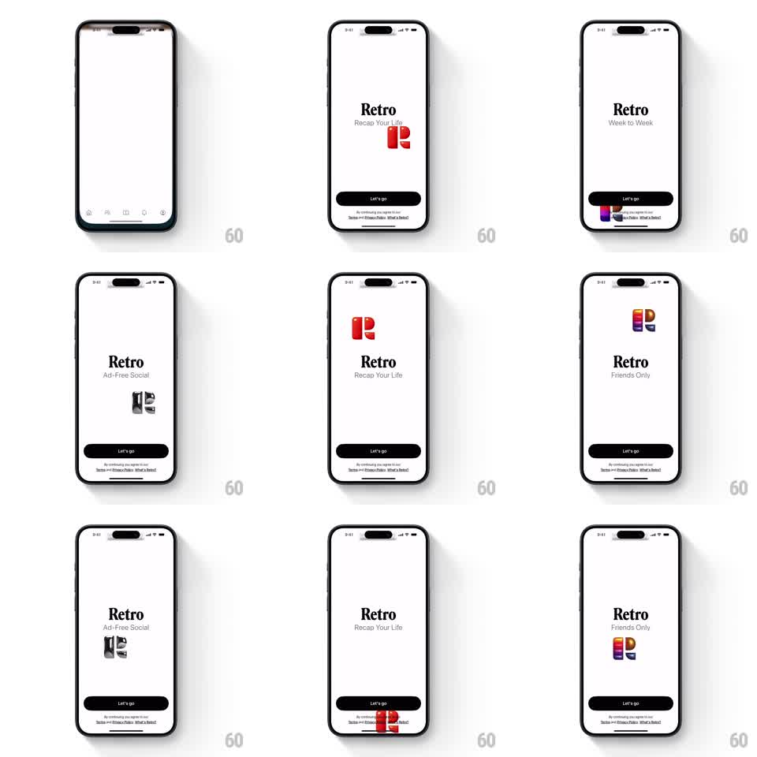

Media
Frame-by-frame

Rebuild this animation 1:1: Retro's get-started slideshow - an auto-advancing pitch where the 3D "R" logo slides and bounces between screen positions as the value-prop copy swaps beneath the wordmark.

Rebuild this animation 1:1: Retro's get-started slideshow - an auto-advancing pitch where the 3D "R" logo slides and bounces between screen positions as the value-prop copy swaps beneath the wordmark.
## Integration
Integration: stack-agnostic spec - springs given as stiffness/damping, timed motions as duration + curve; map every value to your framework and animation library of choice.
## Scene
White screen. Serif "Retro" wordmark center-top with a rotating subtitle ("Recap Your Life", "Week to Week", "Ad-Free Social", "Friends Only"). The 3D logo - a chunky "R" built from a photo stack (red default, colorful photo edges) - appears at different spots: beside the wordmark, near the bottom button, center. Fixed black "Let's go" pill at the bottom over a terms line.
## Motion spec
Pattern: auto-advancing slides with a traveling mascot logo.
- Every ~1.8s the slide advances automatically: the subtitle crossfades with a small rise (translateY 8px to 0, 300ms).
- The 3D logo travels to its new position per slide: it slides along a curved path with a spring (stiffness ~200, damping ~16) - one clear bounce on landing - while rotating slightly in 3D (rotateY +-15deg) to show the photo-stack depth.
- The logo scales with its position: larger center stage (~120px), smaller near the button (~48px).
- The sequence loops until "Let's go" is tapped; the wordmark and button never move.
- The logo casts a soft contact shadow that tracks its landing spot.
## Calibration
- One bounce on landing - the charm is a single confident hop, not wobble.
- Auto-advance timing stays brisk; the user can tap Let's go at any point without a state mismatch.
## Reduced motion
Logo crossfades between positions; subtitles fade in place.
## Don't miss
- The R is a stack of photos - its edges show layered prints, not a flat extrusion.
- Subtitle and logo position change as a pair; each value prop owns its logo placement.